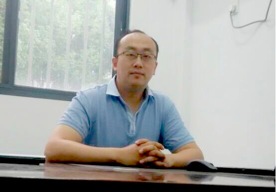
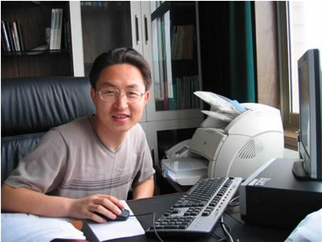

Member introduction：
Chen Deng, male, born in 1983, Ph. D. , lecturer, master's supervisor, graduated from Huazhong University of Science and Technology in 2014, majoring in computer software and theory, wuhan "Green Mountain Cup" Youth Technology Entrepreneurship Competition Second Prize. The main research fields are software security, program constraint mining and verification, intelligent technology of industrial robot, multimedia data processing and so on. He has published more than 30 SCI / Ei retrieval papers, applied for more than 10 national invention patents, granted 4(first inventor) , granted 8 utility model patents, and registered 10 software copyright. To preside over and participate in one national 11th FIVE-YEAR PLAN PROJECT AND FIFTEEN national plan project, one natural science fund project of Hubei Province, one major project of robotics of the Department of Science and technology of Hubei Province, one project of outstanding middle-aged and Young People's Science and Technology Innovation Team Project of Hubei Province colleges and universities, the Science and Technology Research Program of the Hubei Provincial Department of Education has one project for young talents, the key laboratory of high performance data mining in Shenzhen has one project for funding, and the Educational Management Information Center of the Ministry of Education has one project for computer-aided technology education, 2 Wuhan Institute of Technology Grants. Editor-in-chief book "Introduction to Industrial Robot Application Technology" , reference editor (Associate Editor) book "Data Structure" . Mainly engaged in C / c + + , c # , Java, QT. Net, Win32, GDI and GDI + , image processing, DSP and embedded technology research and development work, with more than 100,000 lines of code writing experience. Led the team to develop a complex system meta-view graphical modeling platform, HIGH-VOLTAGE LINE INSPECTION ROBOT, Internet of things-based Remote Animal Disease Monitoring and early warning system, software security detection system, 360-degree panoramic parking system, distributed virtual prototype modeling and simulation platform, project management software based on SVN, fire alarm system and reusable code manager. Participate in Wuhan Zhengyuan Railway Electric Co. , Ltd..ERPP system and 11vs113d simulation robot soccer platform and other projects development work. Mainly engaged in "programming basis" teaching work, as a teacher to organize the founding of the "Wuhan Institute of Technology Acm Association. Guiding 5 graduate students, guiding several undergraduate students, guiding students to get national-level Innovation and Entrepreneurship Training Program Project 1, provincial-level Projects 2, President's fund several; Guiding Students Won 1 Silver Award, 1 bronze award, several school-level awards, and 1 Second Prize in Hubei University Students' Innovation Design Competition of "Creating Youth" , "Internet + " , "Challenge Cup" and other entrepreneurial competition school-level awards.

Wei Wei, Male, Ph. D. in robotics from Columbia University, is a distinguished Professor at Columbia University, member of Canadian Engineering Association, IEEE MEMBER OF USA, member of China Welding Association, Member of China Robot Standardization Technical Committee, member of China Welding Association Robot Automation Professional Committee, beijing "Haiju Project" overseas high-level talent, Beijing special expert, currently Director of the Wuhan Institute of Technology.

Zhang Yanduo, Male, born in December 1971, Ph. D. , professor, Huazhong University of Science and Technology, professor. He is currently Vice President of Wuhan Institute of Technology and Director of the key laboratory of intelligent robots in Hubei Province. In recent years, he has won the titles of national outstanding educator, the 7th Hubei Province Top ten outstanding youth, Hubei Province Outstanding Communist Party member, Wuhan Science and Technology Innovation Top ten outstanding youth and so on. Is Hubei Province has the outstanding contribution young and middle-aged expert, enjoys the State Council, Hubei Province Government special allowance. The main scientific research field is the theory research and application development of intelligent system. Participated in, completed and presided over more than 20 national, provincial and ministerial projects, including the National Defense Science and Technology Third Prize 1, provincial and ministerial science and Technology Progress Prize 2, Third Prize 1. A number of technical achievements reached the international advanced level and filled the gaps in China. Published 52 academic papers, which entered the three major search 27. To be responsible for the construction of Provincial Experimental Teaching Demonstration Center and provincial excellent courses. The textbook edited by the chief has been included in the "Eleventh five-year plan" and "Twelfth five-year plan" textbooks of national planning for General Higher Education. Guiding students to obtain China's youth science and Technology Innovation Award, the National Miyoshi Students, "Challenge Cup" and other national awards. Based on the research of intelligent technology, the first robot soccer team of Hubei Province was founded. Since 2002, the team has won the world robot competition 13 times, demonstrating the strength of theoretical research and technology development, achieve good social reputation and broad social impact.
Yang Yichen, female, born in 1997, a graduate student, is currently studying at the Wuhan Institute of Technology, where she is responsible for the WITRobPose website and the Dataset.
Peng Yuqi, Male, currently a graduate student in the Wuhan Institute of Technology, is studying the use of convolutional neural network to estimate the position coordinates of joints in industrial robots, a great collection of video data and tools for this site.
Yu Chaobo, male, is now a grade 19 student of Wuhan Institute of Technology, as a class monitor position, 19 last semester won the Outstanding Class Cadre Award. Actively Learn Web front-end development, active participation in various projects, familiar with C and C + + language, responsible for WITRobPose site development and data set annotation.
Tagging of work participants：
He nannan，Class 11, Wuhan Institute of Technology 19
Liu mingyu，Class 12, Wuhan Institute of Technology 19
Lei yu，Chinese and Foreign Intelligence Class 01, Wuhan Institute of Technology 19
Ouyang wei，Class 12, Wuhan Institute of Technology 19
Wang yili，Class 11, Wuhan Institute of Technology 19
Xu zewang，Chinese and Foreign Intelligence Class 01, Wuhan Institute of Technology 19
Zhang wenjing，Class 12, Wuhan Institute of Technology 19
Du bolun，Class 12, Wuhan Institute of Technology 19
Yang zhuorui，Class 11, Wuhan Institute of Technology 19
Wei jianing，Chinese and Foreign Intelligence Class 01, Wuhan Institute of Technology 19